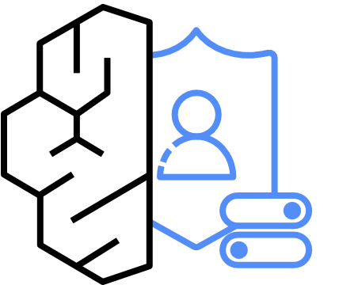
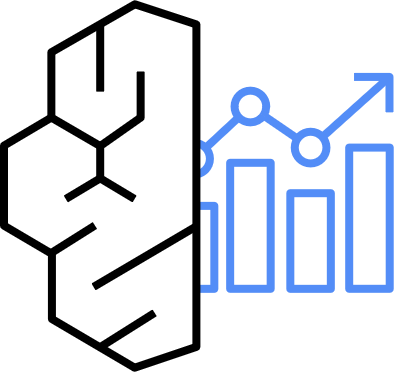

온프렘 전산실 (5호망)
5호 단말: Claude Code
LLM Gateway, MCP 중계, 망연계 솔루션 (수신)
연구개발망
연구개발 단말(NAC, DLP, DRM), 망연계 솔루션 (송신), VPN
인터넷망
인터넷 PC ✕ 사내망 미연결
③ DX
② VPN
망연계 단방향
망연계 단방향
① 인터넷
AWS 서울 리전: Workloads OU, AI Platform
R&D OU: 연구개발망
개발 VPC, SWG/CASB 경유 인터넷
Sandbox OU: Playground
승인 모델만, 사내망 미연결
위 버튼으로 경로를 하나씩 켜 보세요. 공통 원칙: 단말에서 Bedrock 직접 호출은 불가, 인터넷망과 연구개발망은 차단
5호 단말전산실, Claude Code
보안영역운영망, 개발망과 분리
→
→
Data Center VPC (서울 리전)
 AgentCore Gateway→ Lambda, ECS 컨테이너(MCP Hub)
AgentCore Gateway→ Lambda, ECS 컨테이너(MCP Hub)Shared VPC
승인 핵심 조건
① 혁신금융 지정 ② 금보원 '적합' ③ 단말에서 Bedrock 엔드포인트 직접 호출 불가
두 갈래 경로
도구: 단말 → AgentCore Gateway → MCP Hub. 모델: 단말 → LLM Gateway → VPC Endpoint → Bedrock
인터넷 ✕
외부 통신은 전부 차단
출처: KB증권 「망분리를 넘어, AI를 안전하게 확장하다: KB의 AI Ops와 AI Code Assistant 실전 사례」, AWS Financial Services Forum Seoul 2026, MCP Hub 요약 아키텍처
Security OU
Infrastructure OU
Workloads OU
R&D OU
Sandbox, Policy Staging
계정을 눌러 역할과 걸리는 정책을 확인하세요. OU는 같은 SCP를 받는 계정의 묶음이고, 기술 종류가 아니라 규제 경계와 환경으로 나눕니다.
리스크: AI Project 계정이 Bedrock을 직접 호출하면 Gateway를 우회합니다. Project 계정의 bedrock:InvokeModel* 는 Deny, Gateway 역할만 허용합니다.
5호 단말온프렘, Claude Code
사내 방화벽기존 5호망 통제
LLM Gateway(안 A) 전산실
"다음 홉"을 눌러 요청 한 건을 따라가 보세요.
리스크: Gateway 배치는 두 안을 함께 제시합니다. KB증권의 배치는 공개되지 않았고 금보원 해석에 따라 달라지므로 컨설팅 단계에서 확정합니다.
전산실 (5호망): 개발자 단말
Claude Code터미널, IDE 플러그인
Codex같은 Gateway 뒤 보조 클라이언트
사내 MCP 서버, 지식 원본형상관리, 일정, 모니터링, 규정집, 코딩 표준
AI Platform 계정 (Workloads / Prod), DX 경유
MCP Hub = AgentCore GatewayAgentCore Identity(AD)로 사내 시스템 호출, VPC egress → 온프렘AI Project 계정 (컨텍스트 계층)
Vector: Bedrock Knowledge BasesOpenSearch Serverless, 규정, 가이드 문서 의미 검색
Graph: Neptune Analytics (+ AWS Context 검토)온톨로지, 관계 검색
왜 컨텍스트 계층까지: Claude Code가 사내 규칙을 알고 코드를 쓰려면 컨텍스트가 필요합니다. 원본은 온프렘에 두고, ETL을 거친 Vector와 Graph만 MCP Hub를 통해 검색합니다.
MCP 클라이언트
Claude Code
Codex
사내 에이전트
Inbound Auth

JWT 검증IdP: 사내 AD 연동 (Keycloak, Entra ID, Cognito 중 택1, 확인 필요)AgentCore Gateway (MCP Endpoint)
tools/list 분기: 사용자 권한별로 보이는 도구가 다름
Semantic tool search: 도구가 많아도 필요한 것만 노출
AgentCore Policy (Cedar): 호출 단위 허용 / 거부 (2026.03 GA)
Outbound Auth: AgentCore Identity: 자격증명 보관, 사용자 대신 호출. 단말에 자격증명이 남지 않음
Targets
OpenAPI / Smithy형상관리, 배포, 티켓
기존 MCP 서버, KB 조회사내 문서, RAG
Observability: 호출 로그 → CloudWatch → Log Archive. 클라이언트는 Hub URL 하나만 압니다.
서울 리전: Gateway, Identity, Policy, Observability 가용(AgentCore 리전 문서). 전용 엔드포인트 bedrock-agentcore.gateway. 확인 필요: Policy 엔진의 처리 리전
클라이언트
Claude CodeCLAUDE_CODE_USE_BEDROCK
CodexResponses API
LLM Gateway
Bedrock InvokeModel 경로ANTHROPIC_BEDROCK_BASE_URL, CLAUDE_CODE_SKIP_BEDROCK_AUTH
OpenAI 호환 APIResponses / Chat Completions
① 인증, 인가
② DLP
③ 로깅
④ Quota
백엔드
OpenAI on BedrockGPT-6 Astra, GPT-6.1 Sol 등 global / US CRIS만
(향후) 사내 모델온프렘 vLLM
Claude Code 연결 방식: Bedrock 모드에서 Gateway가 /model/{id}/invoke-with-response-stream 을 받아 자기 역할로 다시 서명합니다. 단말은 Gateway 토큰(Authorization: Bearer)만 가집니다.
리스크: OpenAI 모델은 서울 in-region이 없어 Codex는 CRIS가 전제입니다. 국외 처리와 DLP 범위를 신청서에 명시하고, 지정서에 "사용 도구"를 적는 경우 도구 추가 시 변경 신고가 필요한지 확인합니다.
온프렘 전산실 (원본)
사내 규정집, 디자인 가이드
코딩 표준, 아키텍처, 기술문서
✕ AI에 원본 직접 연결 없음
DX 경유 승인 배치
DX 경유 승인 배치
AI Project 계정 (지식 계층)
Bedrock Knowledge Bases + OpenSearch ServerlessVector: 문서 의미 검색 (서울 가용)
AWS Context지식 그래프: 데이터, 조직, 정책 관계 (서울 확인 필요)
Neptune Analytics그래프 질의: 규정 조항 간 관계 (서울 가용)
개발자 질의를 눌러 보세요
Claude Code는 AgentCore Gateway의 MCP 도구(search_policy, search_design, graph_query)로만 검색합니다.
서울 리전 기준 설계: Amazon Bedrock Managed Knowledge Base(2026.06 GA)와 Bedrock KB GraphRAG는 서울 리전 미지원(AWS 문서)이라, 기본안은 Bedrock Knowledge Bases + OpenSearch Serverless와 Neptune Analytics입니다. AWS Context는 서울 가용성 확인 필요. ETL 가명화 규칙은 컴플라이언스 검토 대상입니다.
통제면 (Control Plane), AI Platform 계정
Gateway 정책DLP, 라우팅
MCP Hub 등록Quota, 예산
실행면 (Data Plane)
5호망 AI코딩 에이전트
상용 AI 프로젝트AI Project 계정
컨텍스트 계층Vector, Graph
(향후) 그룹 계열사그룹 결정 사항
| 통제 | 위치 | 구현 |
|---|---|---|
| 누가 | IdP + AgentCore Identity | AD 그룹 → 역할 |
| 무엇을 (모델) | LLM Gateway + SCP | allowlist |
| 무엇을 (도구) | AgentCore Gateway + Policy | 등록, 인가 |
| 얼마나 | Gateway Quota + Budgets | 3겹 비용 통제 |
| 기록 | Log Archive + SIEM | 감사 추적 |
예외: 연구개발망은 완전한 망분리 대상이라 이 통제면에 붙일 수 없고, 별도 통제면이 필요합니다.
금보원 점검 질문을 눌러 보세요
Gateway 애플리케이션 로그V2 데모의 감사 로그

AgentCore Observability보관 기간: 1년 이상을 기본으로 설계합니다(인터넷 접속 기록 1년 이상 기준 준용). 지정 부가조건의 보관 기간은 확인 필요입니다.